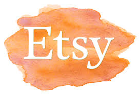
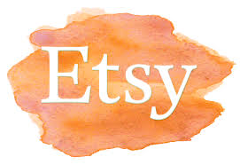

About
Tote bags, messenger bags, clutch bags, shoulder bags, purses & wine bags.
All our products are handmade in Elland, West Yorkshire, UK using recycled leather.
Using the natural curves, edges and natural imperfections in the leather that would usually be dis-guarded, we create unique, one off pieces.
Due to the techniques used, and the nature of leather, no two pieces will ever be identical.
Our buttons are also handmade using white clay, imprinted with a design (including astrology signs), handpainted and varnished.
Most of our items are fully lined with inside pockets. Details about each item, including sizes can be found on our online shops under the particular item.
See where to buy for online shop links.
Where to buy
You will find a selection of our handmade leather items in the following shops:
Handmade in Huddersfield, 20 Imperial Arcade, Huddersfield, HD1 2BR
The Gallery, Britania Road, Slaithwaite, Huddersfield, HD7 5HE
Kasbah Emporium, 16 Bridge Gate, Hebden Bridge, HX7 8EF
If you have seen an item online that you would like to see in person, in a particular shop, or if you have seen an item in a shop but would like to see it in a different colour, please speak to the shop staff or contact us and we will try our best and bring one along with the next delivery - with absoloutely no obligation to purchase..You can also buy at our online shops: Crafique and Etsy
Contact
Email: victoriasugden@yahoo.co.uk
Please feel free to contact us with any queries. We can be found on insatgram and facebook, however, the email above will have the fastest response time.
 
